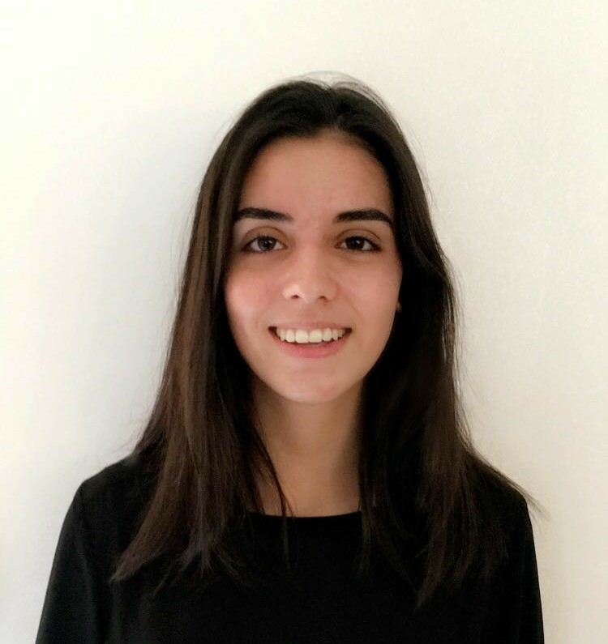

Caroline Geron
Responsable Marketing et Communication

A propos de moi !
Je m'appelle Caroline Geron, j'ai 22 ans et je suis responsable Marketing et Communication.
Je suis créative, j'aime le challenge et le travaill d'équipe
Ma formation
Master Communication et stratégie digtale
- IICP - Paris 13ème
- 2020 - 2022
- En cours
Bachelor Marketing et Communication
- PPA - Paris 14ème
- 2017 - 2020
- Diplôme obtenu
Baccalauréat STMG option mercatique
- Lycée Albert Schweitzer - Le Raincy
- 2014 - 2017
- Diplôme obtenu mention assez bien
Mes expériences
Responsable Marketing et Communication
Spa Miriaform - Romainville (depuis Mars 2020)
- Animation des réseaux sociaux / site internet
- Gestion du CRM – Prestashop
- Relation avec les fournisseurs / prestataires
Chargée de Relation clients
Unizen - Paris 16ème (Février 2019 - Août 2019)
- Suivi et gestion des commandes - CRM interne
- Conseil à la clientèle / Relation clients
- Prospection B to B
Assistante commerciale
EUREKA Training Solutions - Paris 6ème (Octobre 2018 - Janvier 2019)
- Gestion du CRM
- Création et suivi des dossiers de formation
- Gestion factures clients / fournisseurs
- Livraison d’outils e-learning
Mes compétences
- Pack Office (PCIE obtenu)
- Suite Adobe
- CRM (Prestashop et Vitiger)
- WordPress (niveau débutant - 1 an)
- Réseaux sociaux (Instagram, Facebook, Twitter, LinkedIn)
Langues
- Anglais - Niveau B2
- Esapgnol - Niveau C1
Interets
Voyages
- Espagne
- Portugal
- Angleterre
- Pays-Bas
- Italie
- Dubai
- Grèce
- Etats-Unis
Cinéma
- Films
- Séries
- Documentaires